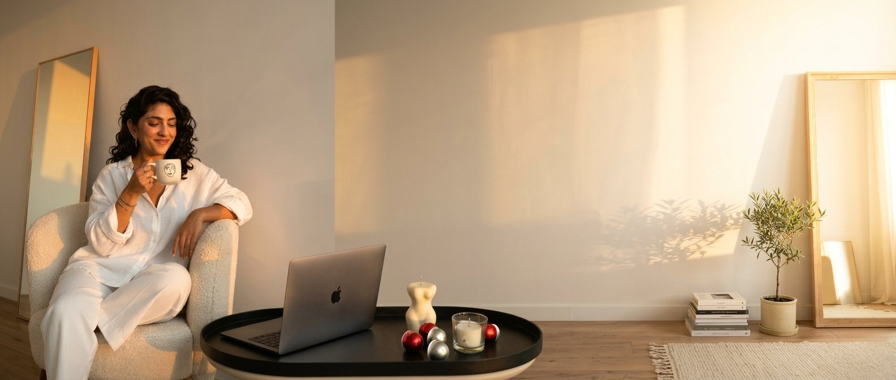
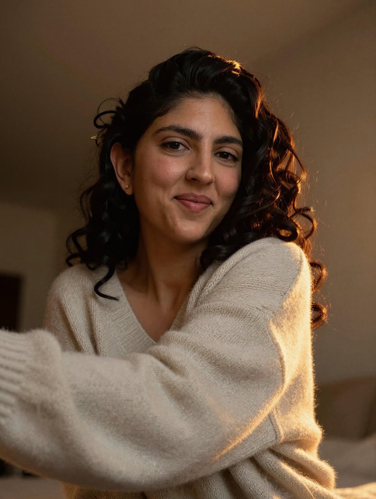

לפני שאני מעצבת,
אני מתאהבת בסיפור.
אני מעיין, אני בונה מיתוג לעסקים, ואני מתחילה תמיד מהאנשים שמאחוריהם.
בשיחה נעימה, על כוס קפה, מדברים על מה שלא נכתב בבריף. משם נבנה העולם.
אני בחורה רגישה. פעם חשבתי שזו חולשה, היום זה כלי העבודה המרכזי שלי.
אני שומעת גם מה שלא נאמר בקול - את ההתלבטות, את הגאווה, את הפחד לקחת מקום. כשאני מתחברת לאדם שיושב מולי, נבנים העולמות הכי יפים שיצרתי. זה הבידול שלי, והוא מספיק.
עסקים שיש מאחוריהם
מישהו שאכפת לו.
עצמאיים ומשפחתיים, כאלה שהעסק שלהם הוא גם הבית שלהם. לא חייבים לדעת להסביר מה מיוחד בהם - זה החלק שלי. בסוף, מה שמחבר אותי לעסק הוא הסיפור, לא התחום.
-
חקלאות
מטעים, משקים
ועובדי אדמה -
מזון ויין
יקבים, מאפיות
ומטבחים קטנים -
מלאכת יד
קרמיקה, תכשיטים
וסטודיו ביתי -
לייף סטייל
נרות, תכשיטים
ומוצרי בית
כל אחד מהם התחיל בשיחה.
שלושה דברים שאני עושה הכי טוב
אני מתחילה מהסיפור, אבל מה שהלקוחות פוגשים בסוף הוא משהו שאפשר לראות ולהחזיק.
-
אריזה שמספרת מי אתם.
תוויות, קופסאות ושקיות שנראות טוב על המדף ובתמונה. מהסקיצה ועד קובץ מוכן לדפוס.
בערך שבוע עבודה -
אתר שנראה כמו העסק שלכם.
אתר תדמית נקי, ברור ונוח בנייד, בעיצוב שמתאים לעולם של העסק ולא לתבנית מוכנה.
לדוגמה: התמרנים, [שם האתר השני].
בערך 4 שבועות עבודה -
לוגו וזהות שנולדים משיחה.
אנחנו מדברים, אני מקשיבה, ומזה נבנית שפה אחת לכל נקודת מגע.
מ-3 שבועות, תלוי בהיקף
מתחילים בשאלון קצר ושיחה, ומשם זה זז מהר. כל מסלול כולל משוב ברור ומספר סבבי תיקונים מוגדר.
נשמע מעניין? בואו נדבר{{ quote.text }}

אני עובדת מהבית,
ואני לא מתנצלת על זה
הסלון שלי הוא הסטודיו. יש בו שולחן גדול, יותר מדי כוסות קפה, ושקט, וזה בדיוק מה שמאפשר לי להיות בפרטים ולא למסור עבודה שנראית כמו של כולם.
למדתי עיצוב גרפי וגיליתי שהיתרון שלי הוא לא רק בקובץ, אלא בשיחה שלפניו, כי כשאני מבינה את העסק, הקובץ יוצא מדויק כבר בפעם הראשונה. אני נכנסת לעסק של מישהו כמו שנכנסים לבית: בשקט, בסקרנות, בלי לשנות את הרהיטים לפני שהבנתי למה הם שם.
ואם תשאלו אותי איפה הלב שלי? הוא בשדות, אצל אנשים שקמים מוקדם ועובדים עם האדמה, ושלרוב אין להם מי שיספר את הסיפור המדהים שלהם. ואני אוהבת לעבוד עם כל מי שיש לו סיפור שמגיע לספר.
אפשר להתחיל בקטן
-
א׳
פריט בודד
אריזה, הזמנה, שילוט או קטלוג קטן
לעסק שכבר יש לו שפה ורק צריך עוד חלק קטןמחיר קבוע שמוסכם מראש -
ב׳ - מומלץ
מיתוג מלא
מהשיחה ועד זהות מלאה
לוגו, פלטה, אותיות, אריזה, מודפסים ותבניות לרשתותמחיר קבוע שמוסכם מראש -
ג׳
מיתוג מחדש וליווי
לעסק שגדל והשפה שלו נשארה מאחור. חידוש הזהות, ואחריו ליווי לאורך הדרך: עוד שלט, עוד אריזה, עוד פוסט. אני נשארת.
מחיר קבוע שמוסכם מראש
ספרו לי על העסק שלכם
אני מקשיבה טוב
אין צורך להגיע מסודרים. כתבו בשורה או שתיים מה אתם עושים ומה מרגיש לא נכון כרגע, ואחזור אליכם לשיחה של רבע שעה בלי התחייבות.